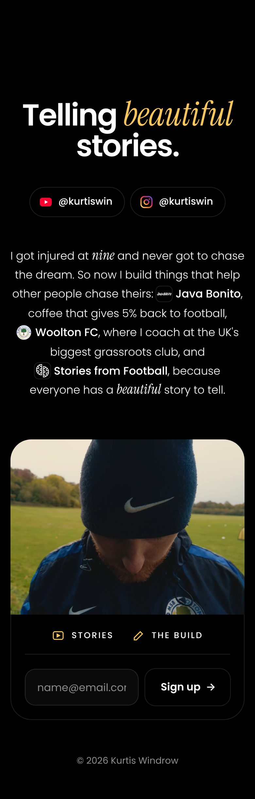
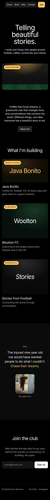
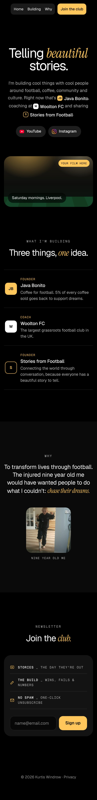

<title>KurtisWin - Design Board</title>
<meta name="claude:viewport-fit-sides" content="cover">
<link rel="preconnect" href="https://fonts.googleapis.com">
<link rel="preconnect" href="https://fonts.gstatic.com" crossorigin>
<link rel="stylesheet" href="https://fonts.googleapis.com/css2?family=Poppins:wght@600&family=Geist:wght@300;400;500;600&family=Geist+Mono:wght@400;500&family=Instrument+Serif:ital@1&display=swap">
<style>
/* Board: one dark column; palette + type up top, then three concept columns with scrollable phone previews. */
:root{
  --bg:#000; --surface:#111; --surface-2:#1c1c1c; --line:rgba(255,255,255,.12);
  --text:#fff; --muted:#b3b3b3; --gold:#FFC65C;
  --sans:"Geist",system-ui,-apple-system,"Helvetica Neue",Arial,sans-serif;
  --serif:"Instrument Serif",Georgia,serif;
  --mono:"Geist Mono",ui-monospace,Menlo,monospace;
  color-scheme:dark;
}
*{box-sizing:border-box}
body{background:var(--bg);color:var(--text);font-family:var(--sans);font-size:16px;line-height:1.5;
  padding-left:max(16px,env(safe-area-inset-left,0px));padding-right:max(16px,env(safe-area-inset-right,0px))}
a{color:inherit}
:focus-visible{outline:3px solid var(--gold);outline-offset:3px;border-radius:8px}
.wrap{max-width:1240px;margin:0 auto;padding-block:56px 80px;display:flex;flex-direction:column;gap:64px}
.label{font-family:var(--mono);font-size:12px;letter-spacing:.18em;text-transform:uppercase;color:var(--muted);margin:0 0 14px}
h1{font-weight:400;font-size:clamp(2.4rem,6vw,4.4rem);letter-spacing:-.04em;line-height:1;margin:0;text-wrap:balance}
h1 em{font-family:var(--serif);font-style:italic;color:var(--gold)}
.intro{color:var(--muted);max-width:60ch;margin:16px 0 0;font-size:17px}

.foundations{display:grid;gap:16px;grid-template-columns:repeat(auto-fit,minmax(min(100%,340px),1fr))}
.panel{background:var(--surface);border-radius:20px;padding:24px;min-width:0}
.swatches{display:grid;grid-template-columns:repeat(4,1fr);gap:10px}
.sw{display:flex;flex-direction:column;gap:8px;font-family:var(--mono);font-size:11px;color:var(--muted);min-width:0}
.sw i{display:block;aspect-ratio:1;border-radius:12px;border:1px solid var(--line)}
.type p{margin:0}
.type .t1{font-size:34px;font-weight:600;letter-spacing:-.04em}
.type .t2{font-family:var(--serif);font-style:italic;font-size:36px;color:var(--gold);line-height:1.1}
.type .t3{font-family:var(--mono);font-size:12px;letter-spacing:.16em;text-transform:uppercase;color:var(--muted);margin-top:8px}
.type .t4{font-family:"Helvetica Neue",Helvetica,Arial,sans-serif;font-size:30px;letter-spacing:-.03em;margin-top:14px}
.type small{display:block;font-family:var(--mono);font-size:11px;color:var(--muted);margin-top:2px}
.parts{display:flex;flex-wrap:wrap;gap:10px;align-items:center}
.pill{display:inline-flex;align-items:center;gap:8px;height:40px;padding:0 16px 0 12px;border-radius:999px;background:var(--surface-2);font-size:14px;font-weight:500}
.pill svg{width:18px;height:18px}
.chip{display:inline-flex;align-items:center;gap:6px;font-weight:500}
.chip b{display:inline-grid;place-items:center;width:22px;height:22px;border-radius:7px;font-size:11px;font-weight:600}
.btn{height:44px;padding:0 20px;border-radius:14px;background:var(--gold);color:#000;display:inline-grid;place-items:center;font-weight:600;font-size:15px}

.concepts{display:grid;gap:20px;grid-template-columns:repeat(auto-fit,minmax(min(100%,340px),1fr))}
.concept{background:var(--surface);border-radius:24px;padding:20px;display:flex;flex-direction:column;gap:16px;min-width:0}
.concept.pick{box-shadow:inset 0 0 0 1.5px var(--gold)}
.head{display:flex;justify-content:space-between;align-items:baseline;gap:10px}
.head h2{margin:0;font-weight:500;font-size:22px;letter-spacing:-.02em}
.tag{font-family:var(--mono);font-size:11px;letter-spacing:.12em;text-transform:uppercase;color:var(--muted)}
.pick .tag{color:#000;background:var(--gold);padding:4px 9px;border-radius:999px}
.phone{height:560px;overflow-y:auto;border-radius:22px;border:1px solid var(--line);background:#000;overscroll-behavior:contain}
.phone img{display:block;width:100%;height:auto}
.concept ul{margin:0;padding:0 0 0 18px;color:var(--muted);font-size:15px;display:grid;gap:6px}
.concept ul strong{color:var(--text);font-weight:500}
.open{margin-top:auto;display:inline-flex;justify-content:center;align-items:center;height:48px;border-radius:14px;background:var(--surface-2);text-decoration:none;font-weight:500}
.open:hover{background:#262626}
.pick .open{background:var(--gold);color:#000}

.next{display:grid;gap:16px;grid-template-columns:repeat(auto-fit,minmax(min(100%,340px),1fr))}
.next h3{margin:0 0 10px;font-weight:500;font-size:18px}
.next ol,.next ul{margin:0;padding-left:18px;color:var(--muted);display:grid;gap:6px}
.next strong{color:var(--text);font-weight:500}
.icon-opts{display:grid;gap:16px;grid-template-columns:repeat(auto-fit,minmax(min(100%,300px),1fr))}
.opt{display:flex;flex-direction:column;gap:10px;text-decoration:none;padding:14px;border-radius:16px;background:#000;box-shadow:inset 0 0 0 1px var(--line)}
.opt:hover{box-shadow:inset 0 0 0 2px var(--gold)}
.opt img{width:100%;max-width:360px;height:auto}
.opt span{font-size:15px}.opt em{font-style:normal;color:var(--muted)}
</style>

<main class="wrap">
  <header>
    <p class="label">Personal brand · Design board · v8 · Concept A chosen</p>
    <h1>Telling <em>beautiful</em> stories.</h1>
    <p class="intro">Three directions for your new site. Same colours as your Carrd draft (black, white, gold), same words, three different moods. Scroll inside each phone, or open the live page.</p>
  </header>

  <section class="foundations" aria-label="Foundations">
    <div class="panel">
      <p class="label">Colour</p>
      <div class="swatches">
        <div class="sw"><i style="background:#000"></i>#000000<br>Background</div>
        <div class="sw"><i style="background:#131313"></i>#131313<br>Card</div>
        <div class="sw"><i style="background:#fff"></i>#FFFFFF<br>Text</div>
        <div class="sw"><i style="background:#FFC65C"></i>#FFC65C<br>Gold</div>
      </div>
    </div>
    <div class="panel type">
      <p class="label">Type</p>
      <p class="t1" style="font-family:Poppins,sans-serif;letter-spacing:-.035em">Poppins</p><small>Concept A headline and body</small>
      <p class="t2">beautiful</p><small>Instrument Serif italic, for feeling words</small>
      <p class="t4">Helvetica, regular</p><small>Concept B, the Sandcastle look</small>
      <p class="t3">Geist Mono · labels &amp; small print</p>
    </div>
    <div class="panel">
      <p class="label">Pieces</p>
      <div class="parts">
        <span class="pill"><svg viewBox="0 0 24 24" aria-hidden="true"><rect x="1" y="4" width="22" height="16" rx="5" fill="#FF0033"/><path d="M10 8.5v7l6-3.5z" fill="#fff"/></svg>YouTube</span>
        <span class="pill"><svg viewBox="0 0 24 24" aria-hidden="true"><rect x="2" y="2" width="20" height="20" rx="6" fill="none" stroke="#D62976" stroke-width="2.2"/><circle cx="12" cy="12" r="4.3" fill="none" stroke="#FA7E1E" stroke-width="2.2"/></svg>Instagram</span>
        <span class="chip"><b style="background:#FFC65C;color:#000">JB</b>Java Bonito</span>
        <span class="chip"><b style="background:#fff;color:#000">W</b>Woolton FC</span>
        <span class="chip"><b style="color:#FFC65C;box-shadow:inset 0 0 0 1.5px #FFC65C">S</b>Stories from Football</span>
        <span class="btn">Sign up</span>
      </div>
    </div>
  </section>

  <section aria-label="Concepts">
    <p class="label">Concepts</p>
    <div class="concepts">
      <article class="concept pick">
        <div class="head"><h2>A · Personal letter</h2><span class="tag">Chosen · v8</span></div>
        <div class="phone" tabindex="0" aria-label="Concept A phone preview, scrollable"></div>
        <ul>
          <li><strong>v4:</strong> wider story text, Java Bonito logo as its site icon, black pills and button with a gold ring on hover.</li>
          <li>All links live: YouTube, Instagram, Java Bonito, Woolton FC, Stories from Football.</li>
          <li>Your four clips stitched into one silent looping film, then a simple sign-up.</li>
        </ul>
        <a class="open" href="a-dalen.html">Open concept A</a>
      </article>
      <article class="concept">
        <div class="head"><h2>B · Studio</h2><span class="tag">Sandcastle</span></div>
        <div class="phone" tabindex="0" aria-label="Concept B phone preview, scrollable"></div>
        <ul>
          <li><strong>Floating pill nav</strong> and a huge, light headline with one small line.</li>
          <li>Big photo tiles for each project (needs good photos).</li>
          <li>Quietest of the three; gold used only for the Join button.</li>
        </ul>
        <a class="open" href="b-sandcastle.html">Open concept B</a>
      </article>
      <article class="concept">
        <div class="head"><h2>C · Hybrid</h2><span class="tag">Sandcastle + Dalen</span></div>
        <div class="phone" tabindex="0" aria-label="Concept C phone preview, scrollable"></div>
        <ul>
          <li><strong>Sandcastle's hero</strong>: big headline, small line under, lots of space.</li>
          <li><strong>Daniel's pills and inline project links</strong> in that small line.</li>
          <li>Film, project list, your "why" with the nine-year-old photo, then the Join the club card.</li>
        </ul>
        <a class="open" href="c-hybrid.html">Open concept C</a>
      </article>
    </div>
  </section>

  <section class="next" aria-label="Next steps">
    <div class="panel">
      <h3>To pick</h3>
      <ol>
        <li><strong>Which concept</strong>, or which parts of each.</li>
        <li><strong>The small line</strong>: the short "football, coffee, community and culture" version (B, C) or the story version starting at nine (A).</li>
        <li>Gold on "beautiful", or keep the headline all white?</li>
      </ol>
    </div>
    <div class="panel">
      <h3>To send me</h3>
      <ul>
        <li><strong>Your film</strong> (MP4, 10–30 s; I'll compress it so it autoplays fast).</li>
        <li>YouTube and Instagram links, plus Java Bonito and Stories from Football URLs.</li>
        <li>Your Kit (ConvertKit) form ID, so sign-ups go straight in.</li>
        <li>Logos or icons for each project, and a photo or two of you.</li>
      </ul>
    </div>
  </section>
</main>
